χirp Mail System
χirp offers the capability to send mails with atachments. This can be files form the file system,
records from the database, reports from the database and charts from the export folders.
χirp also offers a contact management system.
Contacts
The contact management can be opened using the menu entry Extras -> Contacts.
The empty contact managment can be seen below.
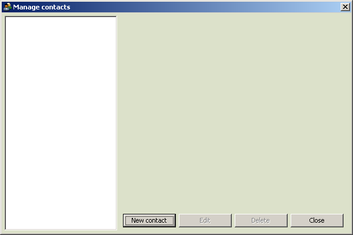
By clicking the button New contact the contact editor opens. Enter all
the nessessary information about the contact you want to create. By confirming the dialog the
new contact will be saved if the information is sufficient.
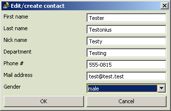
The new contact becomes visible in the contact manager. As you can see in the picture below, the
contact manager shows the information about the selected contact on the right hand side of the dialog.
If you want to edit or delete a contact, just select it and click on the desired button.
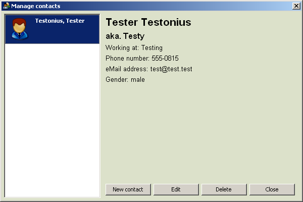
Manage mails
The mail manager can be opened by using the menu entry Extras -> Mail.
The picture below shows the mail manager with no mails sent.
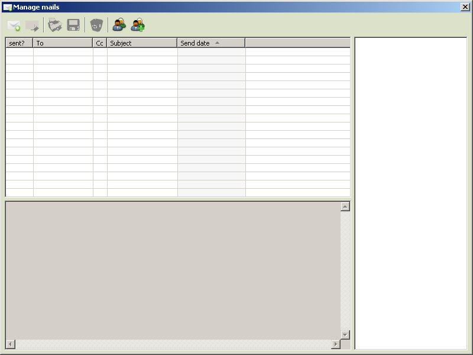
You can compose a new mail my clicking the new mail item.
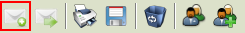
You can forward a mail by selecting it an poressing the forward mail tool item.
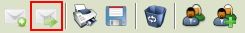
You can print a selected mail, including the attachments, by clicking on the print tool item.

You can save a selected mail, including the attachments, by clicking on the save tool item.
After selecting the target folder the mail will be saved in a separate folder.
You can delete a selected mail by clicking the delete tool item.
The previously explained contact management and new contact dialogs can be opened from
within the mail manager using the corresponding tool items.
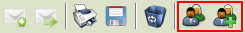
The mail manager will contain sent and unsent mails. Unsent mails occur when something went wrong
with the transportation of the mail. To avoid data loss, those mails are saved as unsent.
The picture below shows the mail manager with a selected mail. Note that the attachements
are shown on the right hand side and the text on the bottom of the dialog. The table above the
mail text area shows information about the send status, send date, subject and the first
receiver name of the TO and CC lists.
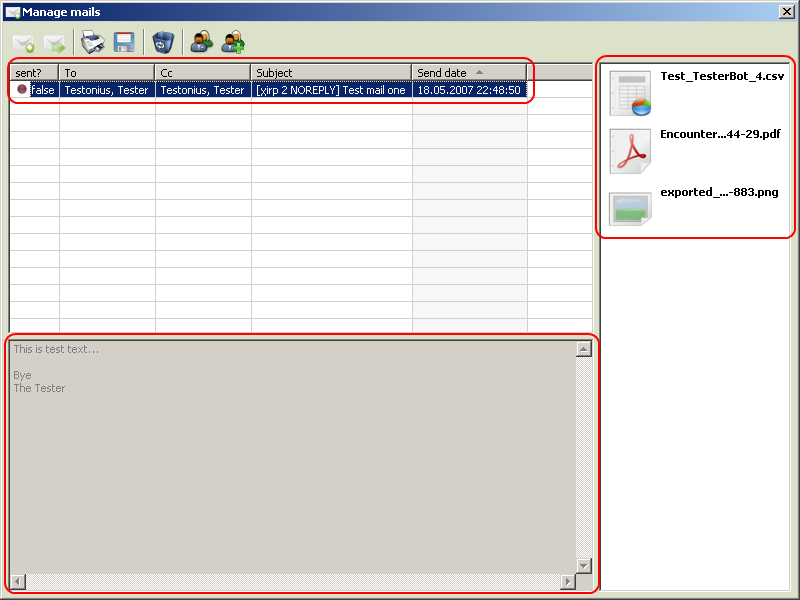
Compose a mail
The dialog to compose a mail is shown below. You may add several TO and CC receivers, a subject,
serveral attachments and a text.
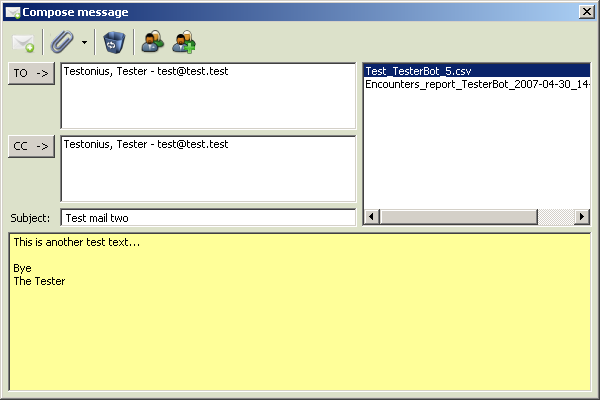
When you have finished composing you mail you can send is using the send tool item.
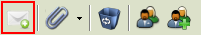
You can attach four different types of files to the mail using the attachment drop down menu.
Each of the options opens either a file lookup dialog or a report/record lookup dialog.

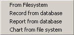
You can delete an attachment by selectin it an clicking the delete tool item.
You can manage your contacts form within the compose mail dialog using the contact tool items.
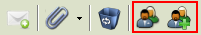